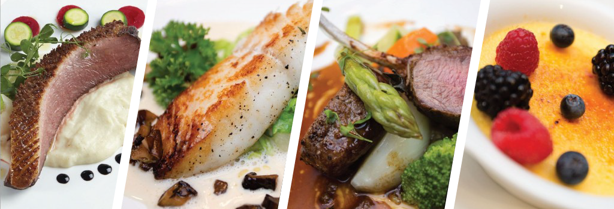

bubble_chart
"For lovers of vrai Parisian ambience, food and drink,
there is simply no better spot than Ici Bistro"
-Toronto City Guide
assorted greens, fennel, Swiss chard, kale, pickled radish, honey-thyme vinaigrette 12
quiche (Lorraine or Goat cheese) served with arugula salad and Jerez dressing 16
duck liver parfait, pistachios and berries 16
light tempura of squash, with ratatouille, toasted almonds, and mustard sprouts 18
grilled tender and lean 6oz flapmeat steak with caramelized shallots and frites 20
Atlantic Mussels steamed in strong Québec Ale with smoked pulled pork 20
traditional duck leg confit with crispy skin, served with potato au gratin 20
Oysters half dozen 19 / one dozen 34
served with fresh berries 12
lemon tart served with blueberry compote 12
three types of artisan cheese from Québec & Ontario 15
kale, pistachios, charred baby leeks, local buffala Ricotta, olive oil vinaigrette 16
roasted beets with aged Ontario goat cheese,hazelnuts, honey and crème fraîche 16
frisée lettuce with pork lardons, avocado, tomato, Jerez vinaigrette, poached egg 16
daily assortment of house-cured meats 20
lamb burger with Moroccan spices and aromats, served with frites 16
seared scallops with a cauliflower purée, grilled endive, seaweed and wild mushroom 22
open face oxtail ravioli with salsifis, Port and red wine sauce 22
roasted fresh Alberta leg of lamb with a lemon and rosemary jus 36
flavourful fish soup as intense as served in Marseille, with red rockfish, shellfish, croûtons, grated cheese & Rouille 30
duck leg confit with crispy skin, served with veg from the garden, potatoes au gratin. One leg 22 / Two legs 30
8 oz centre cut filet, green peppercorn sauce with Brandy and cream. Served with frites 40
with Chanterelles, Hen of the Woods, King oysters, pleurotus, roasted pinenuts, roasted Parmesan Tuiles 18
Oysters half dozen 19 / one dozen 34
served with fresh berries 12
lemon tart served with blueberry compote 12
potted dark chocolate mousse served with Macaron 12
five types of artisan cheese from Québec & Ontario 22
bubble_chart
Mondays to Saturdays
Lunch 11 AM - 3 PM
Dinner 5 PM - 11 PM
Private events on Sundays